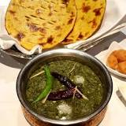

Sarson ka Saag

-
Sarson ka Saag
-
Sarson ka saag is a type of curry, so it is creamy, saucy and simply addictive.
Traditionally, it is served with an unleavened corn-based flatbread known as Makki di Roti, though it can
also be served with Paratha and steamed basmati rice.
Go Back